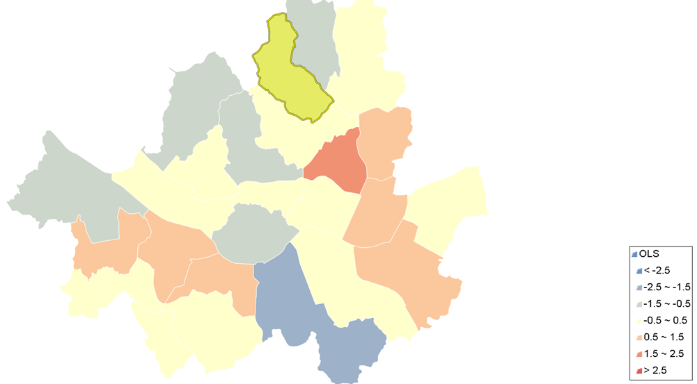

Ordinary Least Squares (OLS)¶
Ordinary Least Squares (OLS) 선형 회귀분석을 수행합니다.
Syntax
OrdinaryLeastSquares (SimpleFeatureCollection inputFeatures, String dependentVariable, String explanatoryVariables) : SimpleFeatureCollection, SpatialOLSResult
Input Parameters
Identifier |
Description |
Type |
Default |
Required |
inputFeatures |
종속변수와 독립변수를 포함하고 있는 입력 레이어입니다. |
SimpleFeatureCollection |
✓ |
|
dependentVariable |
종속변수값을 가진 숫자 필드입니다. |
String |
✓ |
|
explanatoryVariables |
회귀 분석에 사용할 쉼표로 구분된 설명 변수 숫자 필드의 목록입니다. |
String |
✓ |
Process Outputs
Identifier |
Description |
Type |
Default |
Required |
olsFeatures |
종속 변수 추정치와 잔차를 포함한 출력 레이어입니다. |
SimpleFeatureCollection |
||
report |
OLS 분석 결과입니다. |
SpatialOLSResult |
✓ |
Constraints
olsFeatures 레이어는 inputFeatures의 모든 필드를 포함해서 Estimated, Residual, StdResid, StdResid2 필드가 추가된다.
report 결과는 XML로 반환된다.
Examples
a1_2000 필드를 종속변수로, a2_2000, a3_2000, a4_2000 필드를 설명변수로 분석한 결과는 다음의 XML 포맷으로 반환됩니다.
<?xml version="1.0" encoding="UTF-8"?>
<OrdinaryLeastSquares>
<ModelName>Ordinary Least Squares(OLS) Regression</ModelName>
<Dataset>seoul_series</Dataset>
<DependentVariable>a1_2000</DependentVariable>
<NumberOfObservations>25</NumberOfObservations>
<NumberOfVariables>4</NumberOfVariables>
<DegreesOfFreedom>21</DegreesOfFreedom>
<MeanDependentVar>18229.716524000003</MeanDependentVar>
<SdDependentVar>5222.973372203831</SdDependentVar>
<RSquared>0.2524024367985146</RSquared>
<AdjustedRSquared>0.14560278491258805</AdjustedRSquared>
<SumSquaredResidual>4.8945722348412424E8</SumSquaredResidual>
<SigmaSquare>2.3307486832577344E7</SigmaSquare>
<SeOfRegression>4827.782807104866</SeOfRegression>
<SigmaSquareML>1.957828893936497E7</SigmaSquareML>
<SeOfRegressionML>4424.736030472888</SeOfRegressionML>
<FStatistic>2.363326399800135</FStatistic>
<PValue>0.10015684828181148</PValue>
<LogLikelihood>-245.3476108684226</LogLikelihood>
<AIC>498.6952217368452</AIC>
<AICc>503.8531164736873</AICc>
<SchwarzCriterion>503.57072503631804</SchwarzCriterion>
<Summary>
<Variable>
<Variable>CONSTANT</Variable>
<Coefficient>-89839.01661165891</Coefficient>
<StandardError>45251.64301979817</StandardError>
<TStatistic>-1.9853205456507557</TStatistic>
<Probability>0.060320415845298396</Probability>
</Variable>
<Variable>
<Variable>a2_2000</Variable>
<Coefficient>1015.5016202521613</Coefficient>
<StandardError>459.27386712849943</StandardError>
<TStatistic>2.2111025532572612</TStatistic>
<Probability>0.03825397847242593</Probability>
</Variable>
<Variable>
<Variable>a3_2000</Variable>
<Coefficient>657.585445515956</Coefficient>
<StandardError>687.1537990129104</StandardError>
<TStatistic>0.9569698173255696</TStatistic>
<Probability>0.3494719862156815</Probability>
</Variable>
<Variable>
<Variable>a4_2000</Variable>
<Coefficient>74.91087027691356</Coefficient>
<StandardError>575.0254410828144</StandardError>
<TStatistic>0.13027401037396014</TStatistic>
<Probability>0.8975891001920921</Probability>
</Variable>
</Summary>
<VarianceInflationFactor>
<VIF>
<Variable>a2_2000</Variable>
<Value>1.0512492909076563</Value>
</VIF>
<VIF>
<Variable>a3_2000</Variable>
<Value>1.219785000060916</Value>
</VIF>
<VIF>
<Variable>a4_2000</Variable>
<Value>1.178277144719415</Value>
</VIF>
</VarianceInflationFactor>
<Multicollinearity>124.00930330161376</Multicollinearity>
<NormOfErrors>
<Diagnostics>
<Category>Test on Normality of Errors</Category>
<Name>Jarque-Bera</Name>
<DeegreesOfFreedom>2.0</DeegreesOfFreedom>
<Value>0.7273519517018467</Value>
<Probability>0.6951163927538146</Probability>
</Diagnostics>
</NormOfErrors>
<HrcDiagnostics>
<Diagnostics>
<Category>Diagnostics for Heteroskedasticity Random Coefficients</Category>
<Name>Breusch-Pagan</Name>
<DeegreesOfFreedom>3.0</DeegreesOfFreedom>
<Value>5.083212261808894</Value>
<Probability>0.16580435989410658</Probability>
</Diagnostics>
<Diagnostics>
<Category>Diagnostics for Heteroskedasticity Random Coefficients</Category>
<Name>Koenker-Bassett</Name>
<DeegreesOfFreedom>3.0</DeegreesOfFreedom>
<Value>6.588607922676707</Value>
<Probability>0.08623276842110539</Probability>
</Diagnostics>
</HrcDiagnostics>
</OrdinaryLeastSquares>
잔차를 이용한 시각화 결과입니다.
